What makes a book "good?" Are there attributes of a book that make it more likely to be highly rated by its readers?
Fiction, Fantasy, Romance, Young Adult, and Mystery are the most rated genres. While most books can fall under more than one genre, I examine the primary genre for each book (i.e. it's the genre that best summarizes the book, per Goodreads). While the genres with the most ratings are not the most highly rated, the genres that have the highest
ratings often do not have very many ratings. Therefore, one or two ratings can skew the average rating.

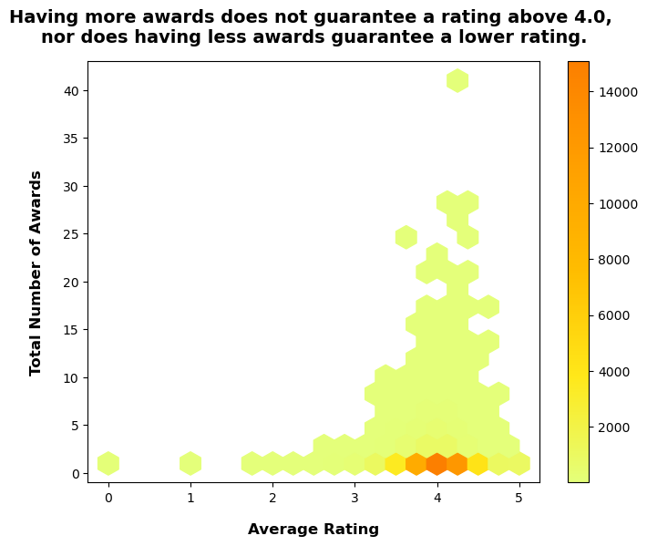
The number of awards a book has does not indicate much about how highly rated the book will be. Take a look at the darker oranges at the bottom of the graph: books with 0-1 awards are rated both above and below a 4.0. Moreover, books with more awards are also found both above and below a 4.0 rating.
The number of awards a book has does not indicate much about how highly rated the book will be. Take a look at the darker oranges at the bottom of the graph: books with 0-1 awards are rated both above and below a 4.0. Moreover, books with more awards are also found both above and below a 4.0 rating.
The books with the most awards have at least a 3.5 Goodreads rating, but more rewards do not always indicate a higher rating relative to books with the same number of awards. Take Holes versus The Giver: they both have 22 awards, but one is rated a 3.97 and another is 4.13.


While French (Middle, ca. 1400-1600), Iranian, Maltese, and Norwegian books may have the highest average ratings, it is important to note that each language has under 10 books total listed for that language. Therefore, the ratings are heavily skewed depending upon what the ratings for those few books are. On the other hand, English, French, and Spanish books make up the most books on Goodreads, so their average rating is more representative of the books as a whole.
When comparing English, French, and Spanish books, English books come up on top with an average rating of 4.019.
English Books with a 4.5+ Rating: Plot Descriptions
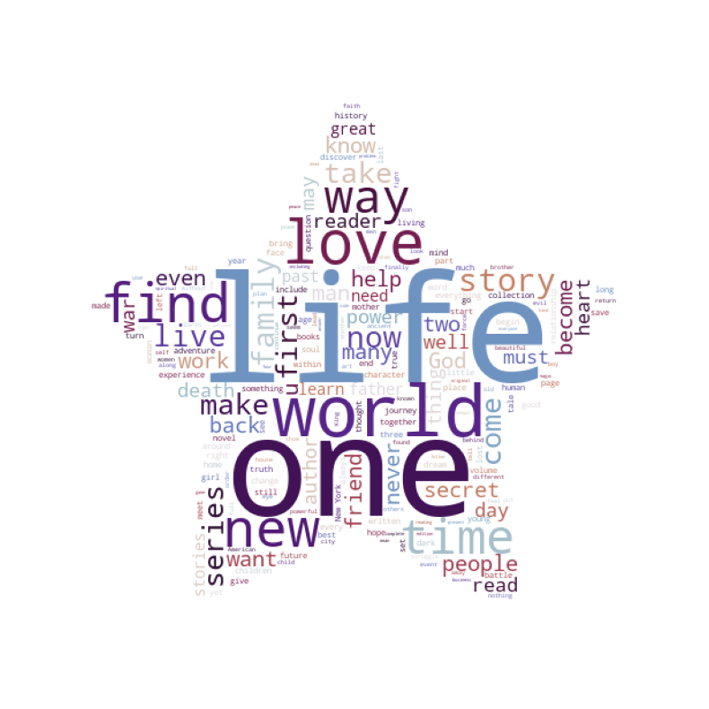
Goodreads provides descriptions of a book's plot. When examining those descriptions for books with the highest ratings, 4.5+, the most common words to appear are "life,"
"one," "world," "love," and "find." This may point to themes that people find most enjoyable, such as life and love.
Words not included in the word cloud are English stop words (words such as "the," "you," "about," "will" etc). I also chose to remove the word "book" as the word was used to introduce the books in question, rather than as a part of the actual description of the plot.
When comparing English, French, and Spanish books, English books come up on top with an average rating of 4.019.
Words not included in the word cloud are English stop words (words such as "the," "you," "about," "will" etc). I also chose to remove the word "book" as the word was used to introduce the books in question, rather than as a part of the actual description of the plot.
When comparing English, French, and Spanish books, English books come up on top with an average rating of 4.019.

When examining the genres with the most ratings, fantasy, fiction, & romance, it becomes clear that fantasy is almost always dominating Goodreads' total rating numbers for the books published each year. This means that people are responding most (whether good or bad) to fantasy books by rating on Goodreads.
Fantasy books published in 2006 overwhelmingly had the most ratings published on Goodreads, so let's do a deep dive into those books...

Two extremely popular fantasy books were published in 2006: The Lightning Thief and Harry Potter and the Half-Blood Prince. These books had a huge rating response from readers, therefore explaining the peak in the graph above. Moreover, both have an average rating above 4.0, thus they remain overall popular with audiences, even though so many people rated them.
Overall Conclusions:
- Fiction, Fantasy, Romance, Young Adult, and Mystery are the most rated genres, though they are not the most highly rated. This is likely due to the total number of reviews these genres receive, as the variation in ratings creates an average rating more representative of the genre as a whole. Manga, for example, is a highly rated genre, but has under 1,000 ratings total. Therefore, the average rating is not as representative of the total readership's sentiment toward the genre.
- The number of awards a book receives does not have a clear correlation to the average rating of the book. Books with little to no awards can still be loved by its readers!
- English, French, and Spanish books are the most rated on Goodreads, with English being the most highly rated out of the three. The languages that have a 5.0 rating likely have such a high rating due to the smaller number of total reviews those books receive.
- English books that cover themes of life, love, and the world are among the most highly rated books on Goodreads.
- Fantasy books are the most rated on Goodreads, with those published in 2006 dominating the reviews for books published that year.
What book should I read next?
- Give a book with fewer awards a chance! There are books loved by readers that don't have any awards.
- Fantasy books are hugely popular. Take a look at the list of those published in 2006 for some inspiration.
- Books with universal themes of love and life draw a large readership that on average enjoy the book they read. The plot descriptions reveal more than what meets the eye!
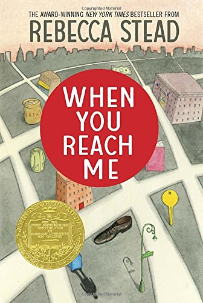
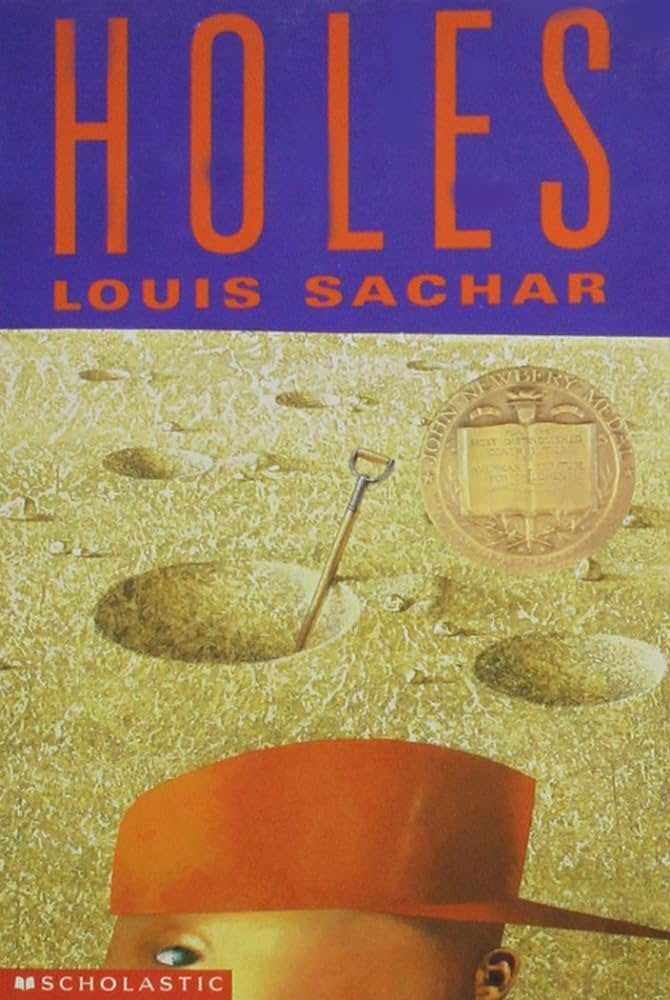
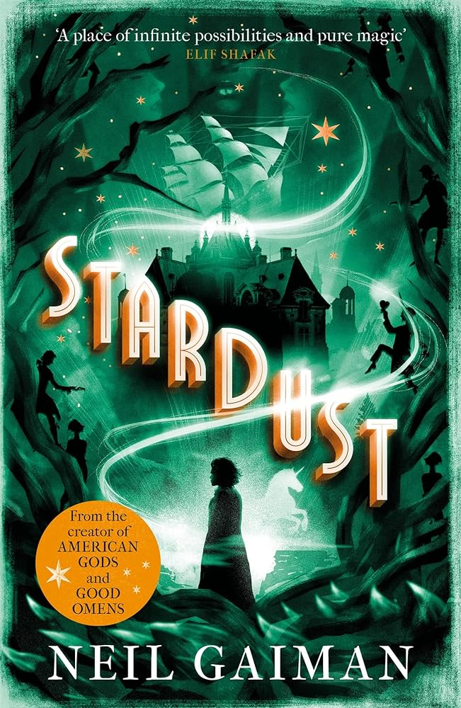
 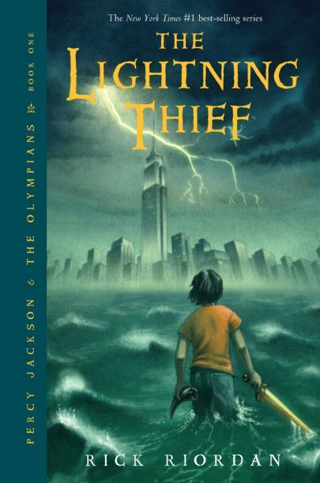
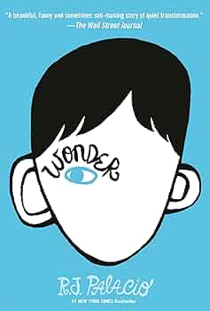
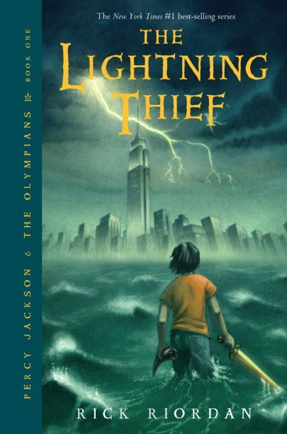
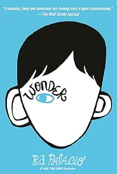
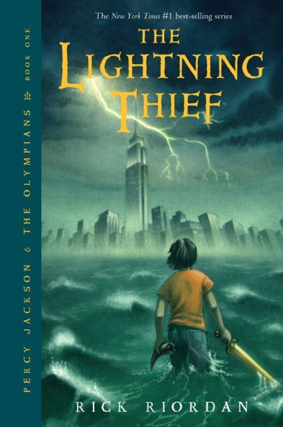
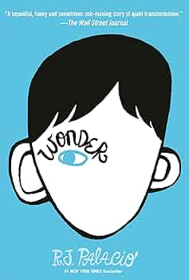
Indecisive? Click here for a random book recommendation: